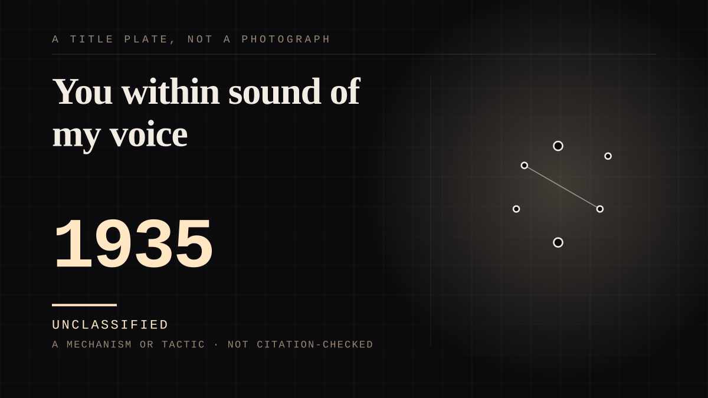

A mechanism or tactic · 1935 ·
You within sound of my voice
A gong, a wheel and a mailbag turned amateur acts into a national radio ritual - while telling everyone listening at home that they were part of the show and could vote its acts out.

The machine was a gong, a wheel and a mailbag, and the point of the address was the second person. Amateur hours had failed twice on New York's WHN before a third try in 1934 put a gong in the studio, an idea the host, Perry Charles, took from a wrestling match; Major Edward Bowes absorbed the format, signed with Chase & Sanborn, and launched it nationally on NBC on 24 March 1935. Listeners voted by telephone and telegram; he spun the wheel - 'Round and round she goes, and where she stops nobody knows' - and gonged the failures. By June the programme was the most listened-to in the United States, and at the summer 1936 peak the Library of Congress counts 10,000 applications arriving weekly, 600 amateurs auditioned, 16 acts on air, and a live audience of 2,000 in Radio City. The first broadcast told the country what it was for: 'You within sound of my voice are just as much part of this show as the youngsters that come to the microphone. Telephone your choice, telephone early, telephone often. You decide the winners.' A machine for one-sided intimacy with a working return path, funded by a coffee company: a listener who would never see the studio could end a stranger's act from a kitchen chair, and the vote landed - winners were promised immediate professional engagement, a promise that in practice was very rarely acted upon. The bill arrived afterwards. Applicants crossed the country on hope and were turned away; and Bowes, looking at the crowd of hopefuls below the window, was quoted saying, 'Look at those poor boobs down there.' The gong was the honesty of the arrangement: it never pretended to be anything but a verdict.
Where it sits
1900 1900-1949 · 1935 1949
Provenance · 3 source record(s)
- retrievableThe third WHN edition under host Perry Charles premiered 28 March 1934, the gong idea taken from a Madison Square Garden wrestling match; Bowes's national premiere on NBC on 24 March 1935; the wheel catchphrase; by June 1935 the most listened-to programme in the United States; at the summer 1936 peak 10,000 applications weekly, 600 auditions, 16 acts on air, and a 2,000-seat studio audience at Radio City.Jenemann, Laura. 'About Major Bowes.' Major Bowes and the Original Amateur Hour, Library of Congress research guide. ↗
- retrievableThe March 1935 move to NBC and the ratings that followed; Newsweek's account of the crowds of applicants, the relief rolls, and Bowes's 'Look at those poor boobs down there'; Frank Sinatra as the show's most famous alumnus; the touring units.Ramsburg, Jim. 'Major Bowes' Original Money Machine.' worldradiohistory.com. ↗
- retrievableThe show went national on 24 March 1935; Bowes's address to listeners - 'You within sound of my voice are just as much part of this show as the youngsters that come to the microphone', and 'telephone your choice, telephone early, telephone often. You decide the winners, and the winners will receive immediate professional engagement'; 200 special telephone lines installed by 1936.Heuser, Harry. 'Gong-ho: A Time-Delayed Cheer for Going Live.' 24 March 2009. ↗
Connected · 2 out, 1 in
It sits in